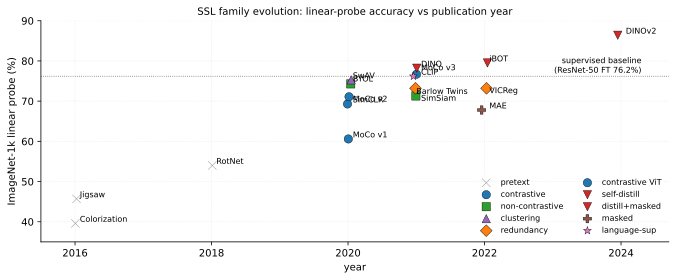
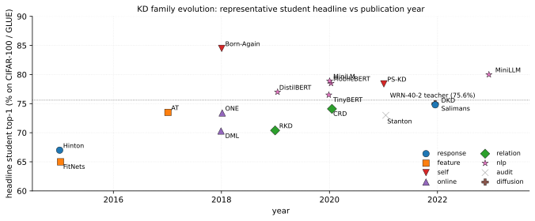

Self-Supervised Learning for Visual Representations
Self-supervised learning emerged as a paradigm to bridge the gap between unsupervised feature learning and supervised representation learning. Early approaches focused on pretext tasks such as image rotation prediction, jigsaw puzzle solving, and colorization; the field then evolved toward contrastive learning, non-contrastive and clustering siamese variants, masked modeling, self-distillation, and language supervision. Each paradigm has characteristic strengths and well-known open problems, walked through paragraph-by-paragraph after the SoTA leaderboard below.
The historical context is important for understanding the field's trajectory. Early SSL methods (2014-2018) produced features useful for downstream tasks but fell substantially behind supervised pretraining; the bar to beat was set by DeCAF (Donahue et al. 2014), which first demonstrated that mid-layer activations of a supervised ImageNet CNN transfer as off-the-shelf features to almost any downstream classification task, founding the pretrain-then-finetune paradigm that SSL would later challenge. The 2019-2020 period saw SSL close the gap with supervised learning on ImageNet linear probing; by 2021-2022, with DINO and MAE on Vision Transformers, SSL began to exceed supervised pretraining on transfer tasks like COCO detection and ADE20K segmentation. The 2023-2024 era (DINOv2, CLIP v2, BLIP-2) has seen SSL become the default pretraining approach for foundation models across modalities.
The specific pretext tasks explored in early SSL reveal the field's progression. Rotation prediction (Gidaris, Singh, and Komodakis 2018) trained the network to classify 4-way rotations (0, 90, 180, 270 degrees) on AlexNet, with a training trick that included all four rotated copies of each image in the same minibatch to avoid BatchNorm drift from rotation-mean shifts; rotations were implemented via flip+transpose rather than interpolation to avoid aliasing artifacts that would otherwise let the network cheat on low-level cues. RotNet reached 54.0% ImageNet linear probing and 54.4% PASCAL VOC 2007 detection (only 2.4 points below supervised ImageNet pretraining); its failure mode is rotation-invariant classes like jellyfish or aerial views, for which the canonical-orientation prior provides no learning signal12. Jigsaw puzzle solving (Noroozi and Favaro 2016) predicted which permutation of a 3x3 tile grid had been applied, reducing the intractable 9!=362,880 permutation space to 100 or 1000 Hamming-well-separated permutations. Noroozi and Favaro's Context-Free Network (CFN) used a Siamese-ennead architecture (9 shared-weight CNN branches each seeing one tile, with cross-tile information only at the final FC fusion) and inserted gaps between tiles to block edge-alignment shortcuts. A further subtlety is the defense against chromatic aberration: natural lenses induce color fringing toward the image edges, which would trivially localize tiles; countered with per-tile channel-mean subtraction or grayscale training3. Jigsaw reached 45.7% ImageNet linear probing and 51.8% VOC detection. Colorization (R. Zhang, Isola, and Efros 2016) reached 39.6% via a 313-way classification formulation (predicting a discretized bin of the ab color space rather than regressing continuous color), with class rebalancing to compensate for the heavy-tail distribution of natural colors; the 39.6% figure is specifically the cross-channel encoder variant where and are jointly trained4. These methods demonstrated that self-generated supervision could learn useful features, but their reliance on specific geometric or chromatic priors limited generalization; modern methods (instance discrimination, masked modeling) avoid these priors with more generic learning objectives.
| ImageNet1k | COCO | ADE | VOC | iNat | ||||||||
| Method | Year | Backbone | Loss | Data | LP | FT | kNN | box | mask | mIoU | mAP | LP |
| RotNet | 2018 | AlexNet | CE(4-way) | IN1k 1.28M | 54.0 | – | – | – | – | – | 54.4 | – |
| Jigsaw | 2016 | AlexNet | CE(K=100) | IN1k 1.28M | 45.7 | – | – | – | – | – | 51.8 | – |
| Colorization | 2016 | VGG | CE(313-bin) | IN1k 1.28M | 39.6 | – | – | – | – | – | 46.9 | – |
| MoCo v1 | 2020 | ResNet-50 | InfoNCE(τ=0.07) | IN1k 1.28M | 60.6 | – | – | 40.7 | 35.4 | – | 81.5 | – |
| SimCLR | 2020 | ResNet-50 | NT-Xent(τ=0.5) | IN1k 1.28M | 69.3 | – | 64.5 | – | – | – | 81.8 | – |
| MoCo v2 | 2020 | ResNet-50 | InfoNCE(τ=0.2) | IN1k 1.28M | 71.1 | – | – | 41.7 | 36.3 | – | 82.5 | – |
| BYOL | 2020 | ResNet-50 | MSE on predictor | IN1k 1.28M | 74.3 | – | 64.8 | 42.0 | 37.8 | – | 81.4 | – |
| SwAV | 2020 | ResNet-50 | swapped CE on Sinkhorn(K=3000) | IN1k 1.28M | 75.3 | – | 65.7 | 41.6 | 37.8 | – | 82.6 | – |
| Barlow Twins | 2021 | ResNet-50 | cross-corr(λ=5e-3) | IN1k 1.28M | 73.2 | – | 66.0 | 39.2 | 35.5 | – | 82.6 | – |
| SimSiam | 2021 | ResNet-50 | neg-cos sim + stop-grad | IN1k 1.28M | 71.3 | – | – | – | – | – | – | – |
| VICReg | 2022 | ResNet-50 | var+inv+cov(25,25,1) | IN1k 1.28M | 73.2 | – | – | – | – | – | 82.4 | – |
| MoCo v3 | 2021 | ViT-B/16 | InfoNCE(τ=0.2) | IN1k 1.28M | 76.7 | 83.2 | – | 47.9 | 42.7 | – | – | – |
| DINO | 2021 | ViT-B/16 | softmax CE + center+sharpen | IN1k 1.28M | 78.2 | – | 76.1 | 46.8 | 41.4 | 47.3 | – | 78.6 |
| MAE | 2022 | ViT-B/16 | MSE on masked patches (75%) | IN1k 1.28M | 67.8 | 83.6 | – | 50.3 | 44.9 | 48.1 | – | 66.1 |
| BEiT | 2022 | ViT-B/16 | CE on dVAE tokens | IN1k 1.28M | – | 83.2 | – | 49.8 | 44.4 | 47.1 | – | – |
| SimMIM | 2022 | Swin-B | L1 on masked pixels | IN1k 1.28M | – | 84.0 | – | 52.3 | 46.0 | 52.8 | – | – |
| iBOT | 2022 | ViT-B/16 | DINO-CE + patch CE | IN1k 1.28M | 79.5 | 84.0 | 77.1 | 51.2 | 44.2 | 50.0 | – | 80.0 |
| MaskFeat | 2022 | MViT | smooth-L1 on HOG | IN1k 1.28M | – | 84.0 | – | 52.4 | 47.0 | – | – | – |
| data2vec | 2022 | ViT-B/16 | smooth-L1 on EMA latent | IN1k 1.28M | – | 84.2 | – | 50.5 | 44.4 | 49.1 | – | – |
| DINOv2 | 2024 | ViT-g/14 | DINO+iBOT joint | LVD 142M | 86.4 | – | 83.5 | 56.5 | – | 53.4 | – | 89.0 |
| CLIP | 2021 | ViT-L/14 | InfoNCE(τ learned) | WIT 400M | 76.2* | – | – | – | – | – | – | 16.6* |
| ALIGN | 2021 | EffNet-L2 | InfoNCE(τ learned) | AltText 1.8B | 76.4* | – | – | – | – | – | – | – |
The table groups the literature into seven families, walked through in chronological order. Early pretext methods (RotNet, Jigsaw, Colorization) reach modest LP via hand-crafted self-supervisory tasks but suffer the same structural limitations: a hand-crafted signal is too narrow for high-level features5 and is vulnerable to low-level shortcuts the network exploits in place of real understanding6.
Contrastive methods learn representations by maximizing agreement between augmented views of the same image while pushing apart views of different images (Chen et al. 2020). Instance discrimination established the foundation by treating each image as its own class; queue-based memory banks and momentum encoders (He et al. 2020) enabled efficient contrastive learning at scale by sidestepping the large-batch dependence7 that simple end-to-end variants like SimCLR require, at the cost of a queue whose features drift from the current encoder during training8. A deeper limitation cuts across the entire contrastive family: the augmentation pipeline declares which transformations should be invariant rather than letting the network learn them9.
Non-contrastive methods including BYOL, SimSiam, and Barlow Twins achieve competitive results without explicit negative pairs, challenging the assumption that negatives are necessary for avoiding collapse. They rely on architectural asymmetries (a predictor head, stop-gradient, or a momentum encoder) or on redundancy reduction objectives to prevent degenerate solutions; why these recipes avoid the trivial constant solution remains contested10 and the methods are notoriously hyperparameter-sensitive11.

Masked modeling, inspired by BERT in NLP (Bao et al. 2022), trains models to reconstruct masked portions of images. MAE (He et al. 2022) demonstrated that simple pixel reconstruction with high masking ratios produces excellent representations; BEiT (Bao et al. 2022) introduced a discrete tokenizer trained offline as a separate dVAE pre-stage, which adds compute and constrains downstream by fixing the visual vocabulary12. A persistent diagnostic for the masked modeling family is the linear-probe / fine-tune disagreement: MAE reports weak LP yet strong FT, while BEiT and its derivatives sit elsewhere on the same axis13. Most 2021+ recipes (MAE, BEiT, MoCo v3, DINO) are also ViT-only and have not transferred well to ResNets14.
Self-distillation methods (DINO, iBOT, DINOv2) and clustering methods (SwAV via Sinkhorn assignment + multi-crop) form a third strand: a teacher-student loop without negatives where the teacher is an EMA of the student. DINOv2 (Oquab et al. 2024) combined self-distillation with masked modeling and large-scale scaling (ViT-g/14, 142M curated images) to produce the first SSL backbone matching supervised on every transfer benchmark; the price is production-scale compute beyond academic budgets and a closed-source data-curation pipeline15.
Vision-language language supervision methods like CLIP (Radford et al. 2021) and ALIGN (Jia et al. 2021) leverage natural language supervision to learn transferable visual representations, enabling zero-shot transfer and catalyzing research in multimodal learning. They also inherit web-text bias16 and the same compute scaling limits17.
The table separates four eras: pretext-based (2016-2018), contrastive (2018-2021), non-contrastive + clustering + masked (2020-2022), and the modern "best of both" line (DINOv2, iBOT, MAE-derivatives). Three readings. First, the contrastive-to-non-contrastive transition was empirical: BYOL and SimSiam dropped negatives entirely with no degradation, refuting the prior assumption that negatives are essential. Second, masked image modeling is not Pareto-dominated by contrastive: MAE has lower linear-probe but higher fine-tuning and downstream segmentation, indicating its representations encode useful structure that is harder to read off linearly. Third, the gap to supervised pretraining (ResNet-50: 76.2% IN1k FT) closed around BYOL/SwAV (2020) for ResNets and around DINO (2021) for ViTs; by 2024 DINOv2 exceeds supervised on every transfer benchmark tested.
Knowledge Distillation
Knowledge distillation sits within the broader model-compression taxonomy alongside pruning, low-rank factorization, and quantization-aware training. Pruning removes redundant parameters, quantization reduces numeric precision, and distillation replaces the teacher with a smaller student parameterization. Unlike pruning and quantization, distillation changes the architecture of the deployed model, which permits structural compression that cannot be expressed as a sparsity pattern or bit-width reduction.
The intellectual precursor of KD is the work of (Buciluǎ, Caruana, and Niculescu-Mizil 2006), who showed that a small neural network; a 1-hidden-layer "mimic model" with 128-256 units; can be trained to recover 91-98% of the AUC of a roughly 1000-model heterogeneous ensemble (SVMs, boosted trees, bagged trees, random forests, kNN) across eight benchmark datasets, producing a 1000x parameter reduction whose original motivation was strictly deploying ensembles onto 2006-era PDAs and embedded devices. Their loss was mean-squared-error on the ensemble's predicted probability (regression onto raw probabilities, not logits and not KL on softened distributions), which is structurally distinct from Hinton's recipe. Their compression pipeline used MUNGE, a synthetic-data generator that expands the training set by perturbing each feature of a real example; categorical features swap to another value with probability , continuous features swap to a neighbor's value and add Gaussian noise; because in-distribution labelled data alone was insufficient to transfer the ensemble's decision boundary, and MUNGE is load-bearing: disabling it drops AUC recovery from 91-98% to 50-70% on some datasets. A notable empirical observation was that the mimic often beats individual ensemble members despite being trained against the mean, suggesting the compression captures ensemble behavior more regularly than any single component does. The failure mode Hinton later solved is saturation: when the ensemble's predicted probabilities are near 0 or 1, the MSE gradient nearly vanishes; this is precisely what motivates temperature scaling. (Ba and Caruana 2014) extended the idea by matching the logits (pre-softmax activations) of a deep teacher rather than its probabilities; their key empirical finding on TIMIT phone recognition was that a shallow 1-hidden-layer MLP with 30,000 units trained on hard labels reaches 23.1% phone error rate, trained on teacher logits it reaches 20.9%, essentially closing the gap to the 20.7% deep 4-layer CNN teacher; but only when the regression target is logits, not softmax probabilities, since logit regression preserves gradient magnitude even when teacher probabilities saturate. They also introduced a bottleneck linear-layer trick: the 30K-unit shallow model has roughly 20M parameters and takes 6-12 GPU-days to train densely, so they factorize the 30K-unit hidden layer through a rank-400 bottleneck, reducing parameters to roughly 1M and training time to 1-2 days; a low-rank-factorization technique that predates modern LoRA by almost a decade. The claim in the paper's title ("Do Deep Nets Really Need to Be Deep?") is pointed but often misread: the paper does not claim shallow nets are inherently sufficient, only that the optimization landscape of shallow nets can reach good solutions when guided by a deep teacher; a distinction that bears on any contemporary "is distillation necessary?" argument. (Hinton, Vinyals, and Dean 2015) unified and formalized these approaches, introducing the temperature-scaled softmax that makes logit-matching recoverable as a limit case of probability-matching, and popularized the term "dark knowledge" for the information contained in the teacher's off-target probabilities.
Subsequent research diverged along two axes. The representation axis asks what to match: probabilities (Hinton, Vinyals, and Dean 2015), intermediate features (Romero et al. 2015), attention maps (Zagoruyko and Komodakis 2017), pairwise relations (Park et al. 2019), or contrastive similarity (Tian, Krishnan, and Isola 2020). The training-regime axis asks how to organize the teacher-student loop: offline (Hinton, Vinyals, and Dean 2015), online (Y. Zhang et al. 2018), self-distillation (Furlanello et al. 2018), or iterative (Mirzadeh et al. 2020). More recent theoretical work has examined why distillation helps generalization (Menon et al. 2021), when it fails silently (Stanton et al. 2021), and how it relates to label smoothing (Müller, Kornblith, and Hinton 2019).
Related to but distinct from KD are self-supervised learning methods that use self-distillation as a pretext task rather than a compression mechanism. DINO (Caron et al. 2021) and BYOL apply EMA-based teacher-student dynamics for representation learning, borrowing the optimization template of distillation but aiming for representation quality rather than compression. (Tian, Krishnan, and Isola 2020) explicitly connects contrastive representation learning to distillation through the CRD framework.
| CIFAR-100 | NLP | ||||||||
| Method | Year | Backbone | Loss | Data | Student | Tch | Δ | GLUE | SQuAD |
| Bucilua (Buciluǎ, Caruana, and Niculescu-Mizil 2006) | 2006 | 1-hidden MLP | MSE on probs | UCI 8 sets | – | – | – | – | – |
| Ba & Caruana (Ba and Caruana 2014) | 2014 | shallow MLP | MSE on logits | TIMIT | – | – | – | – | – |
| Hinton (Hinton, Vinyals, and Dean 2015) | 2015 | MLP/DNN | KL(τ=20)+CE(α=0.9) | MNIST/speech | – | – | – | – | – |
| FitNets (Romero et al. 2015) | 2015 | 17-layer thin | KL+MSE(hint) | CIFAR-10/100 | 64.96 | 64.4 | +1.5 | – | – |
| AT (Zagoruyko and Komodakis 2017) | 2017 | WRN-16-2 | KL+MSE(attn maps,β=103) | CIFAR-100 | 73.5 | 75.6 | +1.7 | – | – |
| RKD (Park et al. 2019) | 2019 | ResNet-20 | KL+Huber(dist)+Huber(angle) | CIFAR-100 | 70.4 | 72.3 | +1.0 | – | – |
| CRD (Tian, Krishnan, and Isola 2020) | 2020 | WRN-40-1 | KL+InfoNCE(τ=0.07,K=16384) | CIFAR-100 | 74.14 | 75.6 | +2.2 | – | – |
| DKD (Zhao et al. 2022) | 2022 | WRN-40-1 | TCKD(α=1)+NCKD(β=8) | CIFAR-100 | 74.81 | 75.6 | +2.8 | – | – |
| DML (Y. Zhang et al. 2018) | 2018 | ResNet-32×2 | CE+KL(peer,no-T) | CIFAR-100 | 70.3 | – | +2.2 | – | – |
| ONE (Lan, Zhu, and Gong 2018) | 2018 | ResNet-32 K=3 | KL(τ=3)+gated ensemble | CIFAR-100 | 73.4 | – | +3.7 | – | – |
| Born-Again (Furlanello et al. 2018) | 2018 | DenseNet-BC | KL(same arch, gen-3) | CIFAR-100 | 84.5 | 82.3 | +2.2 | – | – |
| PS-KD (Kim et al. 2021) | 2021 | ResNet-18 | KL(past-self, αt lin 0..0.8) | CIFAR-100 | 78.4 | – | +1.5 | – | – |
| DistilBERT (Sanh et al. 2019) | 2019 | 6L Transf. | MLM+KL(τ=2)+cos | BookCorp+W. | – | – | – | 77.0 | 86.9 |
| TinyBERT (Jiao et al. 2020) | 2020 | 4L Transf. | MSE(attn)+MSE(hidden)+KL(pred) | BookCorp+W. | – | – | – | 76.5 | 82.1 |
| MobileBERT (Sun et al. 2020) | 2020 | IB-bottleneck | KL(post-attn)+MSE+progr. freeze | BookCorp+W. | – | – | – | 78.5 | 90.0 |
| MiniLM (6L) (W. Wang et al. 2020) | 2020 | 6L Transf. | KL(QK)+KL(VV) last-layer | BookCorp+W. | – | – | – | 78.9 | 89.5 |
| FGFI (T. Wang et al. 2019) | 2019 | Faster R-CNN | MSE(near-obj mask) | VOC07+12 | – | – | – | – | – |
| Stanton (Stanton et al. 2021) | 2021 | ResNet-50 | KL audit (self-distill) | CIFAR/IN1k | – | – | 0.0 | – | – |
| Salimans diffusion (Salimans and Ho 2022) | 2022 | U-Net | MSE(v-param, 2-step rollout) | CIFAR-10 | – | – | – | – | – |
The table groups the literature into seven families, walked through in chronological order. Early response distillation methods (Bucilua, Ba & Caruana, Hinton) match either probabilities or logits between teacher and student; the recipe is simple and effective when the capacity gap is moderate, but it leaves no signal on intermediate representations and degrades under heavy compression18. The Hinton temperature-scaled KL emerged as the dominant logit-based recipe and is still the single-method baseline reproductions reach for, with DKD (Zhao et al. 2022) later showing that the implicit suppression of the non-target term silently kills the dark-knowledge signal precisely when the teacher is most confident; explicit reweighting (β=8 on CIFAR-100) recovers a 1.0-3.4% lift across teacher-student pairs.
Feature distillation (FitNets, AT, NST, FSP) and relational distillation (RKD, CRD) constitute the second strand. They supplement the output match with constraints on intermediate representations or pairwise structure, which adds learning signal when the gap is large but introduces a hint-layer choice that varies results by 1-2 points19. CRD imports the InfoNCE machinery from contrastive learning with K=16384 negatives in a memory bank and provides a 2.1-point lift on heterogeneous teacher-student pairs (VGG-13 MobileNet-V2) where point-wise feature matching stalls; the projection-head depth and memory-bank momentum each move the result by ~0.5%, which is a reproducibility tax practitioners regularly underestimate.
Online and self-distillation (DML, ONE, Born-Again, PS-KD) abandon the offline pre-training requirement: peers train jointly (DML, ONE) or the teacher is the model's own past checkpoint (Born-Again, PS-KD). DML's surprising finding is that small + large peers both improve over solo training, which fits the regularization channel20 better than the "knowledge transfer" framing; identical initialization collapses the KL term, an instability that recurs across peer methods21. PS-KD operates at epoch scale with a linearly annealed αt from 0 to 0.8 over training, providing the smooth spectral-shrinkage curriculum (Mobahi, Farajtabar, and Bartlett 2020) formalizes for kernel regression, at the operational cost of caching one prediction-distribution snapshot per training sample (5 GB FP32 on ImageNet).

NLP distillation (DistilBERT, TinyBERT, MobileBERT, MiniLM) is empirically the most consequential application: every entry retains 96-99% of BERT-base's GLUE while shrinking the model 1.7-7.5x and accelerating inference 1.6-9.4x. The four methods differ in which structural objects are matched: DistilBERT matches output KL plus hidden-state cosine; TinyBERT adds pre-softmax attention MSE plus a two-stage (general + task-specific) recipe with BERT-paraphrased data augmentation; MobileBERT redesigns each layer into an inverted bottleneck and trains an IB-BERT teacher-assistant before progressive layer-wise freeze-and-distill; MiniLM matches only QQ/KK and VV self-attention relations on the last layer (dimension-agnostic). All four depend critically on layer-copy initialization from the teacher22, and DistilBERT's drop-in compatibility (same tokenizer, same hidden size) is arguably more responsible for its adoption than its raw GLUE score. The LLM era pushes the recipe further: MiniLLM (Gu et al. 2024) swaps forward for reverse KL23 and trains via policy gradient on student rollouts to suppress the long-tail mean-seeking behaviour that produces hedging outputs at 32K-128K vocabulary scale.
Task-specific distillation (FGFI for detection, Structured-KD for segmentation, Salimans progressive distillation for diffusion) tailors the matching to dense or generative outputs. FGFI restricts feature distillation to ~0.5% of the feature map (high-IoU anchor positions); enlarging the mask reverts to baseline performance because background features swamp object features24. Salimans progressive distillation halves the teacher's denoising steps recursively (8192 4096 … 4 over 11 rounds) while preserving FID at 2-step parity with the 8192-step teacher; the recipe requires deterministic DDIM sampling, warm-start from teacher weights, and v-parameterization without which the loss explodes at noise extremes25.
Diagnostic and theoretical work (Stanton, Müller, Menon, Yuan, Busbridge) frames the field's open questions rather than providing new methods. Stanton's audit shows students disagree with teachers on 5-15% of training samples even with 4x training budget, and pushing fidelity below 5% degrades test accuracy: KD is partly implicit-regularization rather than faithful imitation26. Müller demonstrates that a label-smoothed teacher loses 0.6-1% in distillation despite higher accuracy, because the penultimate similarity structure collapses27. Yuan's teacher-free Tf-KD recovers up to 0.65% of the gain with no teacher at all, supporting a regularization-dominant view28. Busbridge's scaling-law analysis (Busbridge et al. 2023) finds that for fixed student compute, teacher size has an optimum and over-large teachers hurt29, retiring the folklore "teacher 4x student" prescription. These threads remain unreconciled: the dark-knowledge and regularization hypotheses are both supported by direct experiments, and the practical implication is that distillation strength depends on regime (capacity gap, teacher quality, dataset size) more than on objective design.
The table separates four eras: response-only (2006-2015), feature/relational expansion (2015-2020), online/self-distillation and NLP scaling (2018-2021), and the modern logit-decoupled + LLM-distillation line (2022-2023). Three readings. First, gains from logit distillation alone plateau around the WRN-40-2 WRN-40-1 baseline of about 73.5%; DKD's logit-only recipe matches feature-based methods at 74.8% and is the current state of the art among single-objective methods. Second, NLP distillation is the empirically most successful application of KD: every method on the GLUE band retains 97%+ of teacher accuracy at 1.6-9.4x speedup, far exceeding the proportional gains seen in vision distillation. Third, recent diagnostic and scaling-law work has shifted the field's framing from "how do we transfer more knowledge" to "how do we balance fidelity, regularization, and optimization dynamics", which means newer methods (DKD, MiniLLM, Tf-KD) increasingly justify themselves through diagnostic ablations rather than benchmark-only comparisons.
References
Semantic narrowness: a hand-crafted pretext signal (rotation, color, puzzle) is too narrow for high-level features and breaks for any class whose canonical orientation or palette is undefined.↩︎
Invariance hand-fixing: the augmentation pipeline declares which transformations should be invariant rather than learning them; covariant features (orientation, depth) are sacrificed.↩︎
Shortcut vulnerability: low-level cues (chromatic aberration, edge alignment) defeat the task without explicit defenses (gaps, channel-mean subtraction, grayscale training).↩︎
Semantic narrowness: a hand-crafted pretext signal (rotation, color, puzzle) is too narrow for high-level features and breaks for any class whose canonical orientation or palette is undefined.↩︎
Semantic narrowness: a hand-crafted pretext signal (rotation, color, puzzle) is too narrow for high-level features and breaks for any class whose canonical orientation or palette is undefined.↩︎
Shortcut vulnerability: low-level cues (chromatic aberration, edge alignment) defeat the task without explicit defenses (gaps, channel-mean subtraction, grayscale training).↩︎
Large-batch dependence: SimCLR-class methods need batch to populate informative negatives, requiring TPU-scale compute and LARS-style optimizers.↩︎
Queue staleness: memory-bank features drift from the current encoder; the queue's effective freshness depends on the EMA momentum and feature dimension.↩︎
Invariance hand-fixing: the augmentation pipeline declares which transformations should be invariant rather than learning them; covariant features (orientation, depth) are sacrificed.↩︎
Collapse mystery: why no-negative methods avoid the trivial constant solution remains contested (BatchNorm-statistics theories disputed; stop-gradient role only partially understood).↩︎
Hyperparameter fragility: temperature, EMA momentum, predictor depth, centering and sharpening must be hand-tuned per dataset; transfer of recipes across architectures is unreliable.↩︎
Offline tokenizer dependence: a pretrained dVAE adds a separate compute stage and dramatically constrains downstream by fixing the discrete vocabulary.↩︎
LP-FT gap: linear-probe and fine-tune metrics disagree by large margins (MAE has weak LP yet strong FT), making single-metric comparison misleading.↩︎
ViT-only recipes: most 2021+ recipes (DINO, MoCo v3, MAE, BEiT) do not transfer to ResNets; the convolutional case has been comparatively under-served since 2021.↩︎
Production-scale compute: pretraining on images costs millions of GPU-hours, beyond academic budgets, and most data-curation pipelines are closed source.↩︎
Web-text bias: alt-text supervision inherits stereotype, popularity-skew, and quality artifacts; produces biased zero-shot classifiers without an obvious mitigation.↩︎
Production-scale compute: pretraining on images costs millions of GPU-hours, beyond academic budgets, and most data-curation pipelines are closed source.↩︎
Extreme-compression breakdown: very-low-capacity students (depth ratio below 1:5 to teacher) fail to absorb dark knowledge entirely; intermediate teacher-assistants are required to bridge the gap, at 3x compute cost (Mirzadeh et al. 2020).↩︎
Hint-layer choice: feature distillation requires picking which student layer is supervised by which teacher layer; results vary by 1-2 accuracy points depending on the choice, and a deeper learned regressor partly defeats the purpose by offloading representational work onto the regressor itself (Romero et al. 2015).↩︎
Dark-knowledge vs. regularization: even hand-crafted "teachers" (uniform-over-non-target, label-smoothed one-hot) recover much of the KD gain, and reverse-distillation (small teacher improving large student) demonstrates that classical "knowledge transfer" overstates the role of teacher content (Yuan et al. 2020).↩︎
Online co-training instability: peer methods (DML, ONE) require independent random initialization and a capacity floor; identical inits collapse the KL term to zero, and very-low-capacity peers cannot generate informative soft targets for each other (Y. Zhang et al. 2018).↩︎
Layer-copy initialization fragility: NLP distillation depends critically on copying alternate teacher layers as the student warm-start; random init roughly doubles compute and rarely closes to the same GLUE average; this constrains student architecture to share teacher hidden dimension (Sanh et al. 2019).↩︎
KL direction is empirical: forward KL is mean-seeking and produces hedging students; reverse KL is mode-seeking but unstable without policy-gradient variance reduction; the choice has no clean theoretical winner and depends on whether the deployment task rewards coverage or concentration (Gu et al. 2024).↩︎
Detection imitation-mask sensitivity: object-detector distillation breaks under naive feature matching because >99% of feature-map positions are background; the imitation mask must be roughly 0.5% positive, and enlarging it to "hard negatives" degrades back to baseline (T. Wang et al. 2019).↩︎
Diffusion-distillation prerequisites: progressive distillation requires a deterministic teacher sampler (DDIM, not DDPM), warm-start from teacher weights, and v-parameterization; cold init or stochastic samplers fail outright (Salimans and Ho 2022).↩︎
Silent fidelity failure: students often disagree with the teacher on 5-15% of training samples even with 4x training budget, and reducing this fidelity gap can degrade test accuracy; KD's gain depends on a delicate fidelity-regularization trade-off rather than on faithful imitation (Stanton et al. 2021).↩︎
Label-smoothing equivalence: a teacher trained with label smoothing collapses its penultimate similarity structure, and distillation from such a teacher loses 0.6-1% on ImageNet despite the teacher's slightly higher accuracy; the soft-target signal is not just confidence reduction (Müller, Kornblith, and Hinton 2019).↩︎
Dark-knowledge vs. regularization: even hand-crafted "teachers" (uniform-over-non-target, label-smoothed one-hot) recover much of the KD gain, and reverse-distillation (small teacher improving large student) demonstrates that classical "knowledge transfer" overstates the role of teacher content (Yuan et al. 2020).↩︎
Teacher-size saturation: for a fixed student-compute budget, larger teachers help only up to a threshold beyond which they hurt; the optimal teacher size shifts with student compute, so fixed-ratio prescriptions ("teacher 4x student") should be retired (Busbridge et al. 2023).↩︎